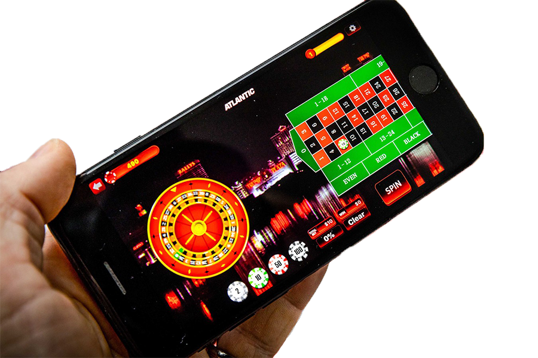

A mobilon elérhető online kaszinók tökéletesek napjaink felgyorsult modern életéhez, hiszen mivel mobilra tervezték őket, könnyű kezelhetőség és felület jellemzi őket és ami a legjobb, bárhol játszhatunk velünk. De nem az összes mobilos kaszinó applikáció ugyanolyan, valamelyiket kicsit nehezebb átlátni a mobiltelefon képernyőjén, valamelyik komoly bónuszokat kínál a többivel szemben és van néhány, ami egyáltalán nem bízhaató, használhatatlan alkalmazás. Természetesen nem szabad elfelejtenünk, hogy minden dolognak vannak előnyei és hátrányai is, amelyekhez visszatérhetünk az online kaszinók kezdetén. Ezt megelőzően nézd meg a mobil verziókat.
Pár évvel ezelőtt még főleg mobilra optimalizált weboldalakon játszhattunk csak online kaszinót telefonról, de napjainkban már sok száz játékot magába ölelő alkalmazásokat kínálnak a cégek. Alapesetben egyébként mindenki azt az előnyét látja az online kaszinós applikációknak, hogy bárhonnan játszhatunk, de ennél van egy komolyabb előnye is, ami főleg a tapasztaltabbaknak jön át azonnal. A komolyabb rutinnal rendelkező játékosok ugyanis tudják, hogy hosszútávon profitot a folyamatos győzelmekkel lehet elérni, ehhez pedig nagyon jól jön, ha az ember folyamatosan játszik kisebb tétekkel, hiszen a minél több játék értelemszerűen növeli a nyerési arányt és ezáltal a bevételeinket is.
Ráadásul minden időnket hasznosan tölthetjük, tehát amíg várjuk mondjuk a buszt vagy sorban állunk valahol, simán a telefonszámlánk terhére pörgethetünk egyet-kettőt. És mivel kis időket játszunk, így elkerülhetjük azt a fajta kiégést és fásultságot, ami előbb-utóbb oda vezetne, hogy már folyamatosan csak pörgetünk, hogy megpróbáljuk visszahozni a korábban elveszített téteket. Az előnyökről már tehát volt szó, most azt kell eldönteni, hogy melyik applikációt is válasszuk a rendkívül nagy kínálatból.
Már volt szó arról, hogy figyeljünk oda, milyenek a bónuszok az adott kaszinónál, milyen biztonsági feltételeket teljesít az adott applikáció, milyen a kifizetési arány és így tovább, de mostanában újabb tényezőként bejött az is, hogy tudunk-e az adott applikációban élő kaszinót játszani. Igen, mobiltelefonos applikációval is lehet már élőben játszani, aminek az a hozzáadott értéke, hogy nem kell az asztalunk előtt kuporognunk, ha egy jót akarunk kaszinózni, akár megtehetjük ezt a teraszon ülve is egy jó pohár bor mellett.
És a legjobb ezekben az, hogy ha nem is az élő fogadás esetén, de egyáltalán a felület megtekintéséhez általában kipróbálhatunk demókat vagy éppen pörgethetünk ingyen is párat. Alapvetően a mobilos applikációkban az online kaszinók ugyanazokat a bónuszokat kínálják, amelyeket a normál felületükön, de azért vannak speciálisan mobilos promóciók is, az élő online kaszinó esetén pedig biztosan találunk olyan bónuszokat, amelyek arra csábítanak bennünket, hogy élőben játszunk a kedvenc kaszinónknál - akár élőben is.
A mobiltelefonos játékosok számára ugyanazok a kifizetési lehetőségek elérhetőek nyeremény esetén, mint a normál felületet használó játékosoknak, tehát ha volt szerencsénk, és egy élő kaszinós asztalnál a buszmegállóban szereztünk egy kis pénzt, akkor kifizetési módtól függően akár pár órán belül már a számlánkon is lehet a pénz. Sokan sokszor felteszik a kérdést, hogy az adataink mobilos applikációban is biztonságban vannak-e, a válasz egyértelműen igen, a legjobb online kaszinók komolyan odafigyelnek az adatok kezelésére és már ha csak a véleményeket elolvassuk egy applikációról, tudhatjuk, hogy ezzel volt-e már gond. a
Különösen jó élő kaszinós lehetőséget kínáló mobilos applikációkat kínál a LeoVegas, ami igen népszerűvé vált a könnyű regisztrációjáról és a komoly bónuszairól, de nem panaszkodhat a Rizk Casino sem, ami rendkívül gyors kifizetést és esetenként 50 szabad pörgetést is kínál az új játékosoknak. A listáról ne hagyjuk le a Sloty-t és a BetSafe online kaszinót sem, a teljesen elfogadható mobilos felület mellett mindkét applikáció komoly bónuszokat kínál és az ügyfélszolgálat elérhetősége is biztosított éjjel-nappal. Úgyhogy ne habozzunk, mindenképpen kezdjünk el mobilon is játszani, ha eddig még nem tettük volna meg, teljesen más élményt kínál, mint a normál felületen történő játék. Ezen ajánlatok mellett bónuszokat is találhat az élő online játékért.